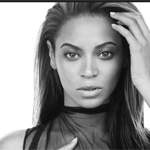

| Home | Destiny's Child | Sasha Fierce | Mrs. Carter |
| [Banner] | |||
|
SashaFierce
|
If I Were A Boy "If I Were a Boy" is a song recorded by American singer Beyoncé for her third studio album, I Am... Sasha Fierce (2008). It was written by BC Jean and Toby Gad, who also handled its production alongside Knowles. Inspired by the difficult break-up of a romantic relationship, the song was initially recorded by Jean, whose record company rejected it. Knowles then recorded her own version. Jean was upset when she learned that Knowles was releasing it as a single, but eventually they reached an agreement. "If I Were a Boy" was released by Columbia Records on October 12, 2008, as the album's lead single alongside "Single Ladies (Put a Ring on It)". The two songs showcased the contrast between Knowles' personality and her aggressive onstage persona, Sasha Fierce. A Spanish version of the song, titled "Si Yo Fuera un Chico", was digitally released in Mexico and Spain. "If I Were a Boy" is a pop introspective ballad which draws influences from folk rock through its instrumentation of which includes acoustic guitars, drums and strings. The song's lyrics lament the misunderstandings between the genders and indict the male side of relationships. "If I Were a Boy" was generally well received by critics, who complimented Knowles' tormented and emotive vocal performance and called the song her best work to date. The single was a commercial success as it placed in the top ten on twenty-five different singles charts.[1] It topped the charts in more than eight European countries, including the United Kingdom, where it is Knowles' best-selling single. "If I Were a Boy" peaked at number three on the US Billboard Hot 100 chart and earned multi-platinum certifications in Australia, Canada, and the US. The accompanying music video for "If I Were a Boy" was directed by Jake Nava and shot in black-and-white. With a theme of role reversal, it is conceptually similar to the American comedy film Freaky Friday (1976). A video for the Spanish version of the ballad was edited from the original clip. Knowles promoted "If I Were a Boy" through live performances at venues including The Oprah Winfrey Show, the 52nd Grammy Awards, and the I Am... World Tour (2009–10). The song has been covered several times on televised music competitions. American singer Reba McEntire sang a country version of the ballad on Country Music Television (CMT), and a studio version was released as the second single from her 2010 album, All the Women I Am. |